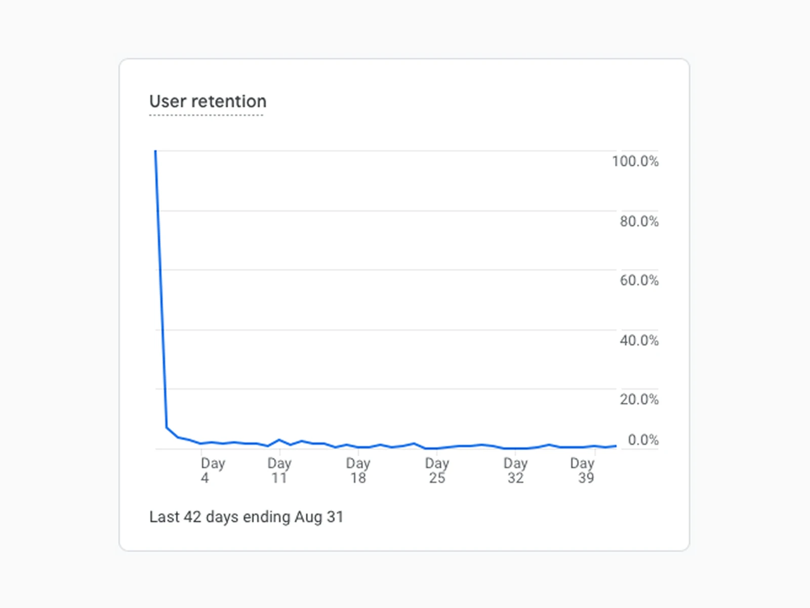
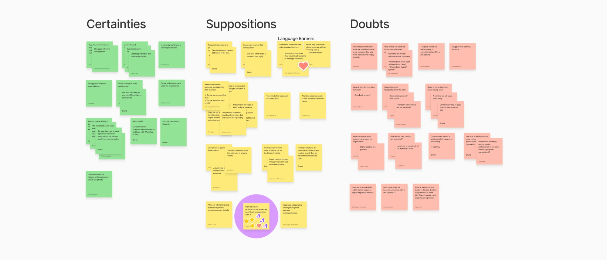
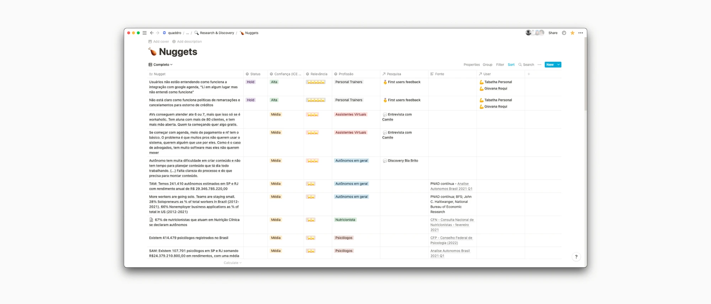
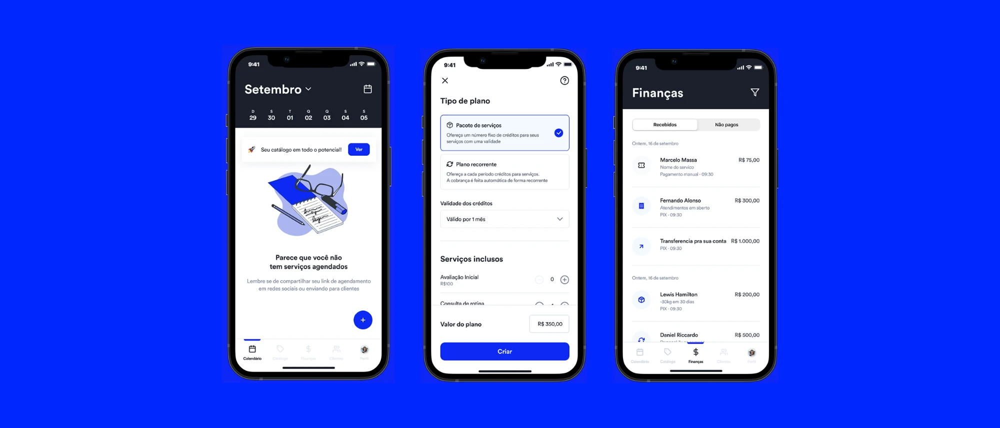
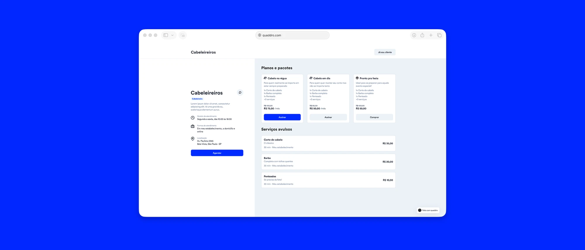

How 32 interviews with Brazilian entrepreneurs turned a plan to adapt a U.S. product into a new one, built for Brazil.
Pix payments, receipts and handwritten records on one worktable, the routine the product had to fit.
The product launched in the United States as Bizbox, a multi-language scheduling tool with embedded payments, built for Latino home service workers. When the company began to look at Brazil in 2021, we first had to find out whether the same product would work for Brazilian entrepreneurs.
As the founding Product Designer, I worked directly with the founders to understand the Brazilian market and turn research into product strategy. Discovery was mine to run: planning, interviews, synthesis, the principles that came out of it, the MVP scope and the interface itself.
A good part of it was facilitation rather than design. I got the founders to agree on what the first release had to prove, then worked with Product, Engineering and QA to build it mobile-first.
Export 01 · 4:3
+The Bizbox appSlide 08 · crop the phone mockups out of the blue panel. No slide title, no “a.” mark.
Bizbox in the United States, with scheduled jobs, prices and addresses in Dallas.

Export 02 · 4:3
+The retention cliffSlide 09 · crop the two Google Analytics cards side by side. Drop the slide title and the footnote.
Retention collapsed after day one · Google Analytics, 42 days ending 31 August 2021.
The unknowns
We started with uncertainty, not features
Before making product decisions, we identified the questions that could change the direction of the company.
01Who are Brazilian micro-entrepreneurs?
02How do they manage their business today?
03Which assumptions from the U.S. product no longer hold?
04What would users need on day one?
05What should we intentionally leave out?
No interface would have saved a product aimed at the wrong problem.

Export 03 · 21:9
+The CSD matrixSlide 12 · crop the three sticky columns. Keep the Certainties, Suppositions and Doubts headings, drop the slide title.
Certainties, suppositions and doubts · separating what we knew from what we assumed, before the first interview.
Research
What the interviews found
Rather than validate the existing product, we used interviews and observation sessions to learn how Brazilian entrepreneurs worked day to day.
The entrepreneurs we met were not using CRMs, managing detailed spreadsheets or looking for advanced business software. They ran their businesses on tools they already trusted and connected the steps by hand.
Export 04 · 4:3
+The research planSlide 14 · crop the Notion window. Keep the “32 · 30min in-depth interviews” card if it crops cleanly beside it.
Thirty-two interviews of thirty minutes each, planned around daily routines rather than product features.
Export 05 · 4:3
+The personasSlide 16 · crop the four persona cards. Check the body text is legible at export scale, it reads greyed out on the slide.
Carol, Tabatha, Guga and Marina · the four working patterns the interviews kept returning to.
01
WhatsApp
Customer conversations, orders and follow-ups happened in the same place as everyday communication.
02
Pix
Instant payments matched the speed and informality of small, mobile-first businesses.
03
Paper notebooks
Financial records stayed on paper, which was flexible and easy to keep up in an overloaded routine.
The existing business stack, three familiar tools connected by hand.
People wanted a product shaped around the way they already worked, not another set of features to learn.
Strategy
Five assumptions became five product decisions
The research changed the product strategy, and that strategy became the MVP scope.
Previous assumption
What we learned
Product decision
Entrepreneurs want business software
They want simple workflows
Prioritise essential tasks over feature depth
More features create more value
Simplicity increases confidence
Remove unnecessary complexity
Desktop-first workflows are acceptable
Business happens on the phone
Design mobile-first
Users will adapt to the product
The product must adapt to users
Mirror familiar behaviours instead of creating new ones
Onboarding should explain everything
Users learn by doing
Focus on immediate value instead of education

Export 06 · 21:9
+Atomic researchSlide 15 · crop the Notion nuggets table. Export at 2x so the column headings stay readable.
Every finding tagged and traceable · the evidence the founders and I argued the strategy from.
The MVP
The smallest product that could validate the direction
The MVP had to take work off people already overloaded by running a business. It covered fast invoicing, Pix-ready payments, simple customer management, clear language and enough restraint to stay quick on lower-end Android devices.
It followed three principles. Fast: immediate value before explanation. Familiar: existing behaviours before new mental models. Light: essential workflows before feature depth.
Invoice
Create and send in minutes
R$ 480,00
Create invoice
Pix payment
Get paid without changing the routine
Pix ready
Share payment
Customers
People, not CRM records
Add customer
A conceptual view of the MVP, built around invoicing, Pix payments and customer management.

Export 07 · 21:9
+The app for prosSlide 23 is empty and slide 22 is the Figma canvas. Best source is the real screens: export them from the “App for pros” file directly, or crop the prototype canvas as a fallback.
The app for professionals · agenda, service plans and finances.

Export 08 · 21:9
+Quaddro in BrazilSlides 24 and 25 · crop the web booking screens. Pick whichever shows the client-facing flow most clearly.
The client side · a professional's booking page, with plans, packages and single services.
Business impact
From adapting a product to rebuilding it
Bizbox did not cross the border. It was rebuilt around Brazilian entrepreneurs and relaunched under a new name, Quaddro. The research and the MVP shaped the pivot, and the company kept building on that product through to a R$16M funding round.
U.S. → BR
the research that shaped the move to Brazil
MVP
built around how Brazilian entrepreneurs worked
R$16M
funding round, raised as the product kept evolving
Before
“How do we adapt the U.S. product?”
→
After
“What product should exist for this market?”
Reflection
Question assumptions before proposing solutions
When a product enters a new market, the assumptions behind it carry more risk than its interface.
Since Quaddro I start with the assumptions, and that still holds at a marketplace serving millions of users.